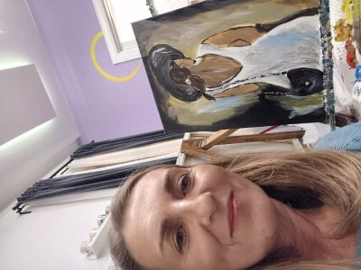

Katarina Katavic

Summary
For the past 15 years, I have been involved in web design and internet marketing. I am highly proficient with computers and possess advanced knowledge of various graphic and development tools: Photoshop, Illustrator, Figma, HTML, CSS, and various content management systems for websites, as well as AI. I have worked on visual design for various graphic materials such as flyers, brochures, posters, etc., for various civil organizations. Additionally, I have promoted products and services for various clients through different digital channels.
Education
- Complete Web & Mobile Designer: UI/UX, Figma, +more - Udemy
- Master AI & WordPress: Web Development with AI (ChatGPT, MidJourney, DALL-E and Elementor AI) - Udemy
- Fundamentals of Digital Marketing - Google
- Web Designer - Algebra
Work Experience
Web Designer - IT company
2014 - onward
- planning and development of web solutions (websites, web applications, e-business, etc.) with continuous communication with clients and collaborators,
- creation of the visual design of the project,
- development and integration of web elements according to the project's functionalities,
- testing and publishing of the web project across various information and communication environments,
- maintenance and upgrading of the web project.
Web Designer and Administrative Assistant - IT company
2013 - 2014
- creation and maintenance of the website and newsletter
- management and coordination of office operations
- organization of marketing and administrative activities in the office
- keeping records of working hours and annual leave
- employee registration/deregistration
- monitoring changes in legal regulations
- assisted with scheduling appointments and meetings
- managed incoming and outgoing mail and correspondence
- prepared reports and presentations using Microsoft Office Suite
Executive Director - NGO
2007 - 2012
- management and coordination of office operations
- planning and preparation of project documentation
- representing the association, public relations
- contacting potential donors, fundraising
- preparing reports on implemented activities
- human resource management (members, volunteers)
Administrative Assistant- IT company
2003 - 2013
- planning, organization, and implementation of program activities
- organization of marketing and administrative activities in the office
- issuing travel orders and maintaining related records
- keeping records of working hours and annual leave
- employee registration/deregistration
- monitoring changes in legal regulations
- assisted with scheduling appointments and meetings
- handling all correspondence with business partners
- market research in procurement and sales
- managed incoming and outgoing mail and correspondence
- prepared reports and presentations using Microsoft Office Suite
Skills
- HTML / CSS ⭐️⭐️⭐️⭐️⭐️
- Responsive Design ⭐️⭐️⭐️⭐️⭐️
- Graphic Design (Figma, Photoshop, Illustrator, Canva) ⭐️⭐️⭐️⭐️⭐️
- SEO ⭐️⭐️⭐️⭐️
- WordPress ⭐️⭐️⭐️⭐️⭐️
- Social Media ⭐️⭐️⭐️⭐️
- Organizational skills: ⭐️⭐️⭐️⭐️
- Excellent Collaboration Skills ⭐️⭐️⭐️⭐️⭐️
- Detail Oriented ⭐️⭐️⭐️⭐️⭐️
- Creativity ⭐️⭐️⭐️⭐️⭐️
Non-formal Education
- Digital marketing
- Lobbying and marketing
- Human resource management
- Fundraising
- Strategic planning for organizations
- Media training (media communication, public speaking, crisis communication)
Selected projects
- Visual design of the association's website www.svezanju.hr and all graphic materials
- Visual design of the association's website www.psihoonkologija.hr and all graphic materials
- Visual design of the association's website www.onkologija.hr and all graphic materials
- Visual design of the association's website www.kuz.hr and all graphic materials
- 2018/2019: Development of a multilingual online questionnaire with 69 questions conducted across several countries and presentation of results at the conference “Joint Action of Oncology Associations from Central and Eastern Europe”
- 2017: Speaker at the course Media and Health: The Future of Healthcare, Grožnjan
- 2011: Speaker at the 1st symposium “Digestive Tract Tumors”: The Role of Patient Associations in Implementing Prevention Programs, Zagreb
- 2010: Congress on Preventive Medicine and Health Promotion: Presentation of the project “mRAK Campaign”, Zagreb
- 2010: Moderator and organizer of the 1st National Conference on Rare Diseases, Dubrovnik
- 2009: Speaker at the course Media and Health: Healthcare Reform in Times of Crisis, Grožnjan
- 2008: International Healthy Cities Conference: Presentation of the project “Knowledge Against Cancer”, Zagreb
Navigation